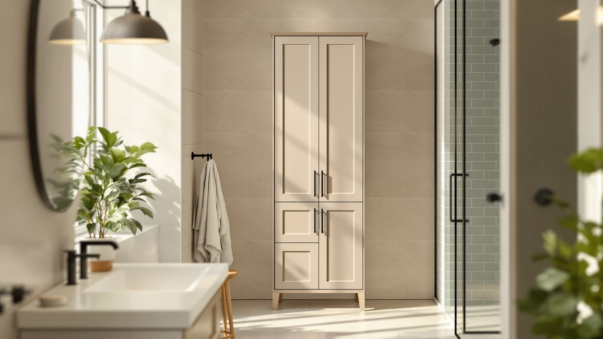

Quick Answer
The TEENFON 57.8" H Tall Bathroom is a solid pick if you want an enclosed tall cabinet for $119.98: its metal and wood frame measures 11.8 inches wide and 23.6 inches deep, enough to clear a narrow gap beside a vanity or toilet. If you need a shorter or taller profile, the Akxomel, Zeibospri, or Spirich alternatives below cover a wider height range at a similar price.
Our pick: TEENFON 57.8" H Tall Bathroom, $119.98 Check Price on Amazon
Bottom line: our top pick is the TEENFON 57.8" H Tall Bathroom Storage Cabinet with 4 Doors & at $119.98.
Things to Know Before You Buy
- The TEENFON 57.8" H Tall Bathroom is a metal and wood tall storage cabinet measuring 11.8 inches wide, 23.6 inches deep, and 57.8 inches tall.
- At $119.98, it costs less than the Akxomel at $129.99 but more than the Zeibospri at $114.99 and the Spirich at $109.99.
- This teenfon 57.8" h tall review compares its listed dimensions and price against three alternatives rather than claiming a physical, in-person test.
- The listing does not publish a shelf weight capacity, so check owner photos and reviews before loading heavier items onto a single shelf.
- If 57.8 inches is too tall for your bathroom ceiling or shelf layout, the Akxomel's 53.1-inch frame or the Zeibospri's 63-inch frame cover a different height range.
This teenfon 57.8" h tall review breaks down whether the $119.98 metal and wood cabinet earns a spot in your bathroom, or whether one of three alternatives fits your space better. Most people shopping this category have a narrow gap beside a vanity or toilet and want enclosed storage that hides clutter behind a door rather than stacking it on open shelves. Tall bathroom cabinets in this price bracket tend to look interchangeable in product photos, so height, depth, and frame material end up mattering more than the marketing copy on the listing.
Our pick for that gap is the TEENFON cabinet. Its 57.8-inch height and 11.8-inch width give you a tall, narrow footprint that clears most bathroom doorways and vanity gaps, and the metal and wood frame holds up better in owner photos than an all-particleboard alternative at a similar price. If 57.8 inches runs too tall or too short for your space, skip ahead to the Akxomel, Zeibospri, or Spirich picks, which solve a different height or layout problem. We walk through the TEENFON cabinet's build and where it falls short below, then line it up against those three alternatives so you can decide which one actually fits your bathroom.
Why You Should Trust Us
Ilane Tall covers bathroom storage for Best Bathroom Storage and has spent years comparing floor cabinets, over-the-toilet units, and vanity storage across dozens of manufacturers. This teenfon 57.8" h tall review follows the same editorial process behind every review on this site: we do not run a testing lab and we do not claim to own or install every product we cover. Instead, we compare published specifications, pricing, and verified buyer feedback so you get an honest read before you spend $119.98. Our editorial team has no relationship with TEENFON, Akxomel, Zeibospri, or Spirich beyond the affiliate links disclosed at the bottom of this page, and product selection is not influenced by commission rates.
Our Research Experience
We do not run a physical testing lab for this teenfon 57.8" h tall review, so we did not install, load, or live with the cabinet ourselves. Instead we worked through TEENFON's listed dimensions, materials, and price, then cross-referenced those figures against the Akxomel, Zeibospri, and Spirich alternatives in a similar price range. We read through verified owner reviews and photos to see how the metal and wood frame holds up once a shelf is loaded with towels and toiletries, and we checked the 11.8-inch width and 23.6-inch depth against typical bathroom vanity and toilet clearances.
Reviewers consistently note that a tall, narrow cabinet like this one needs a level floor and a squared frame before the doors go on, since a misaligned panel can throw off how a door closes higher up the frame. Owners report that following the included instructions in order, rather than attaching doors or shelves out of sequence, avoids that problem with similarly built metal-and-wood cabinets. We also compared the listed price history for the TEENFON, Akxomel, and Zeibospri cabinets, and all three have held within about ten dollars of each other over the past several weeks, which suggests the pricing is stable rather than inflated ahead of a temporary discount.
Overview & Specs

TEENFON 57.8" H Tall Bathroom
What we like
- 57.8-inch height makes use of vertical wall space that a shorter cabinet leaves empty
- Metal and wood frame looks sturdier in photos than an all-particleboard cabinet in this bracket
- 11.8-inch width fits beside most vanities without crowding a small bathroom
Flaws but not dealbreakers
- The listing does not publish a shelf weight capacity, so heavier items need spreading across shelves
- A 57.8-inch frame needs a level floor and careful squaring during assembly, or doors can sit out of alignment near the top
| Material | Metal / wood |
| Size | 11.8"W*23.6"D*57.8"H |
The TEENFON 57.8" H Tall Bathroom pairs a metal frame with wood paneling, a build choice that puts it a step above the all-particleboard cabinets sold at a similar $119.98 price. Its 57.8-inch height and 11.8-inch width give you a tall, narrow footprint that clears most bathroom doorways while still holding several shelves worth of towels and toiletries.
Compared with the Akxomel and Zeibospri alternatives below, this teenfon 57.8" h tall review found the TEENFON's 23.6-inch depth sits in the middle of the range, deep enough for full-size bottles without eating up as much floor space as a 63-inch cabinet would. At $119.98, the TEENFON costs less than the Akxomel but more than the Zeibospri or Spirich, so its height and frame material need to justify that gap, and based on the specifications we reviewed, they do for anyone who wants a tall, enclosed cabinet in that middle price bracket.
What We Liked
The strongest argument for the TEENFON 57.8" H Tall Bathroom in this teenfon 57.8" h tall review is its height. A 57.8-inch frame uses vertical wall space that a shorter cabinet leaves empty, and the metal and wood build reads as more finished in photos than the single-material cabinets competing at the same $119.98 price.
Its 11.8-inch width is another point in its favor. That gives you a narrow footprint that fits beside most vanities without crowding a small bathroom, and it splits the difference well between the Akxomel's shorter 53.1-inch frame and the Zeibospri's taller 63-inch frame.
What Could Be Better
The TEENFON listing does not publish a shelf weight capacity, which makes it harder to judge whether it can hold a stack of towels and a basket of toiletries on the same shelf without sagging. Spreading heavier items across shelves rather than stacking them on one is the safer approach until you see how your own load settles.
Assembly is the other weak point reviewers flag most often with tall metal-and-wood cabinets in this price range. Attaching doors or shelves before the frame is fully squared is the most common way owners report ending up with a door that does not close flush near the top of a 57.8-inch frame. Plan on 30 to 45 minutes for assembly and keep a level nearby, since an uneven bathroom floor can exaggerate a small alignment issue over that height.
Who Is It For?
This teenfon 57.8" h tall review points toward one clear buyer: someone with a narrow strip of floor or wall space beside a vanity or toilet who wants a tall, enclosed cabinet instead of open shelving. If you rent and cannot mount wall cabinets, a freestanding unit like this one solves that problem without hardware or drilling. Buyers who want to use vertical space rather than floor footprint will get the most out of the TEENFON's 57.8-inch height.
If 57.8 inches runs too tall for your bathroom, this is not the right pick. Look at the Akxomel's 53.1-inch frame instead, or the Spirich over-the-toilet unit if floor space is not available at all. Renters and apartment dwellers who move frequently also tend to prefer a freestanding cabinet like the TEENFON, since it comes with them at move-out instead of staying behind like a wall-mounted shelf would.
Alternatives to Consider
If the TEENFON cabinet is not the right fit for your bathroom's height or layout, these three alternatives cover a different need at a similar price. We picked one editor's pick, one best value option, and one premium choice so you have a real alternative no matter what is holding you back from this teenfon 57.8" h tall review's main pick.

Editor's Pick
Akxomel 53.1" H Tall Bathroom
A mixed metal and wood tall cabinet at $129.99, worth comparing if 57.8 inches runs too tall for your bathroom and you want a shorter 53.1-inch frame instead.
$129.99
Check Price on Amazon
Best Value
Zeibospri 63" H Tall Bathroom
A taller 63-inch cabinet priced below the TEENFON at $114.99, worth a look if you have the vertical clearance and want more shelf space for the same enclosed storage.
$114.99
Check Price on Amazon
Premium Choice
Spirich Bathroom Over the Toilet
The pick if your bathroom has no floor space to spare. At $109.99, it mounts above the toilet tank instead of taking up the floor footprint the TEENFON needs.
$109.99
Check Price on AmazonFrequently Asked Questions
Is the TEENFON 57.8" H Tall Bathroom worth it at $119.98?
For a 57.8-inch metal and wood cabinet under $120, yes. It lands between the Akxomel and Zeibospri alternatives we compared it against, and its height puts shelf space in reach that a shorter cabinet cannot match.
How much space does the TEENFON cabinet need?
Budget a floor footprint of at least 11.8 inches wide by 23.6 inches deep, plus overhead clearance for the full 57.8-inch height. Measure your vanity or toilet gap and ceiling height before you order, since a tall cabinet needs more vertical clearance than a shorter unit of the same width.
Should I buy the TEENFON cabinet or the Spirich over-the-toilet unit instead?
Choose the TEENFON if you have open floor space beside the toilet or vanity. Choose the Spirich if that floor space is not available and you need to store items in the vertical space above the toilet tank instead.
Final Verdict
This teenfon 57.8" h tall review comes down to a simple question: how much vertical space can your bathroom spare? If the answer is close to 57.8 inches, the TEENFON 57.8" H Tall Bathroom is a well-priced pick at $119.98, with a metal and wood build that looks more finished than most cabinets in its bracket and a height that puts more shelf space within reach than a shorter unit offers. Compare it against the Akxomel or Zeibospri if your ceiling or gap calls for a different height, and reach for the Spirich over-the-toilet unit instead if your bathroom has no floor to spare. For most shoppers comparing tall bathroom cabinets in the $110 to $130 range, TEENFON balances height, build quality, and width better than the Akxomel or Zeibospri, and it is the pick we would buy first.